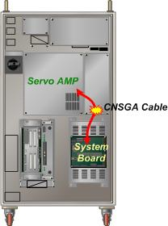

Previous error code: E0014 Safety switch (such as EM, OTR, and TS) instant contact
1.1.49.1. Outline
The AMP detects abnormality (PWMON signal off) with the sequence and then shuts off the motor power. The main reason includes disconnection or defective contact in the PWMON signal wiring. Accordingly, AMP shuts off the PWM command.
1.1.49.2. Causes and examine methods
|
(1) Check the CNSGA cable.
(2) Check / replace the system board.
(3) Check / replace the servo AMP. |
(1) Check the CNSGA cable.
As shown in the following figure, there is a CNSGA cable connecting the servo AMP and the system board to send and receive the PWMON signals. Check if the cable is connected well to the cable connector of the servo AMP or the system board.
As the CNSGA cable may be damaged, replace it and then check.

Figure 1.160 CNSGA connection between the servo AMP and the system board
(2) Check/replace the system board.
If there is no problem with the CNSGA cable, replace the system board and then check. There could be an abnormality with the PWMON signal output circuit.
(3) Check/replace the servo AMP.
If there is no problem with the CNSGA cable and the system board, replace the servo AMP and then check. There could be an abnormality with the PWMON signal output circuit and the monitoring section.